Introduction to Laser Cutting
What is Laser Cutting
Laser cutting is the use of a LASER(light amplification by stimulated emission of radiation) to cut an object along the XY plane. The laser is focused onto a point, burning through the material. Doing this along with moving the laser cutting head allows for the material to be cut into shape. The laser is focused using a set of lenses which allows for very thin cuts to be made. Below shows a comparison of cut width between a laser cutter and other methods of cutting.
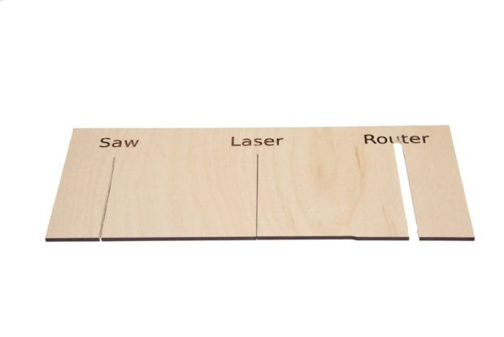There are several parameters that can be set to fine tune the laser cutting process.
Speed
- The speed at which the cutter head moves will affect cut depth as well as degree of charring. The lower the speed, the deeper the cut but the degree of charring with be greater.
Intensity
- The intensity affects the laser cutters cutting effectiveness. The higher the intensity, the deeper the cut. A higher intensity is typically used for denser materials.
Number of Pulses per second
- Most laser cutters employ the method of pulsing, toggling the laser on and off a couple times every second. A greater pulse rate equates to increased exposure to higher intensities from the laser.
Most laser cutter settings come with recommendations by the manufacturer or Technicians for different materials(e.g. wood, acrylic, cardboard etc.), thickness and colour/colouration of the material. Consult the lab technicians for advice about these settings and techniques used.
A laser cutter is able to perform vector cutting, vector engraving and raster engraving. Note that Raster Engraving will take much longer time to produce than Vector Engraving.
-
Vector Cutting
- line weight must be hairline
- The laser follows the outline of an object and cuts it out.
-
Vector Engraving
- line weight must be hairline
- The laser beam will follow the path of vector strokes without cutting all the way through. Also called etching.
-
Raster Engraving
- line weight must be greater than hairline
- The laser moves back and forth, top to bottom to engrave an image. It will precisely burn away the top surface of the material.
Epilog Laser Cutter FUSION M2 32 / 40
There are many types of laser cutters, namely the CO2 laser, the neodymium (Nd), and the neodymium yttrium-aluminium-garnet (Nd:YAG). The most commonly used one and the one we will use in the lab is the CO2 laser cutter. The Epilog Laser Cutter has a cutting area of 1016mm by 711mm. Attached here is a list of materials that can be cut using this laser cutter
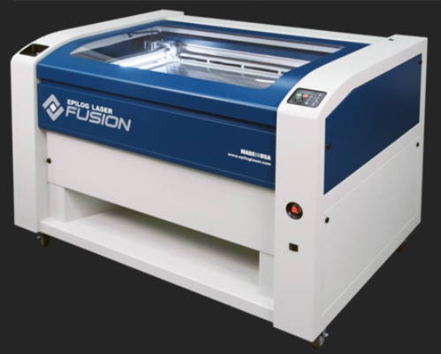Preparing Fusion 360 file for laser cutting
In Fusion 360, we create 3D objects but that is not always compatible for laser cutting. In order to perform laser cutting, we would need a 2D profile with a uniform thickness. To create a larger 3D object out of laser cut parts, we need design the 3D model in such a way where each 2D panel can interlock together. The preferred file formats for laser cutting are...
- AutoCAD DXF (Data eXchange Format)
- PDF (Portable Document Format)
- SVG (Scalable Vector Graphics)
The software CorelDraw Graphics Suite is used by FabLab's laser cutters to check and finalise the cuts. Other open source software such as LibreDraw and InkScape can be used to import, check and layout the DXF files before final import into CorelDraw.
In the following steps, I will show you how to covert a 3D Model(Designed to be constructed out of 2D parts) into a DXF file ready for laser cutting. We will be continueing of the box we made in Week 5. The first thing we need to do is to convert each face into a sketch.
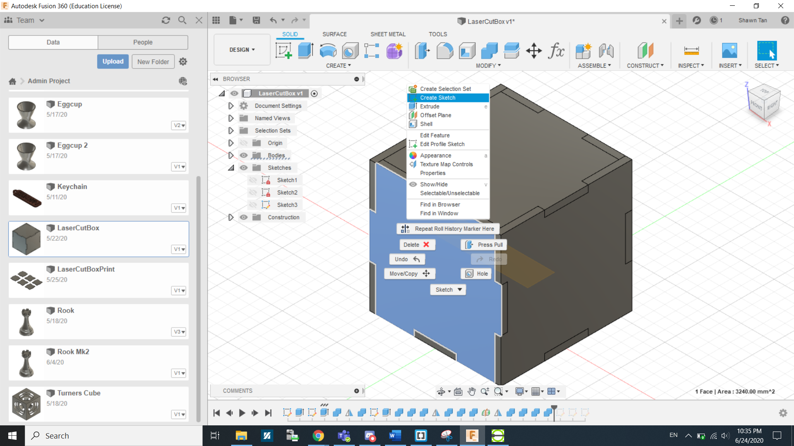We can do this by right clicking the face and select create sketch...
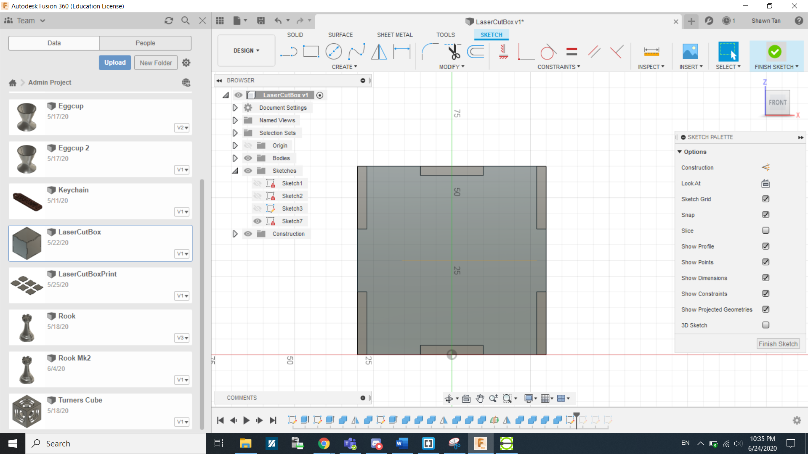...and then click finish sketch.
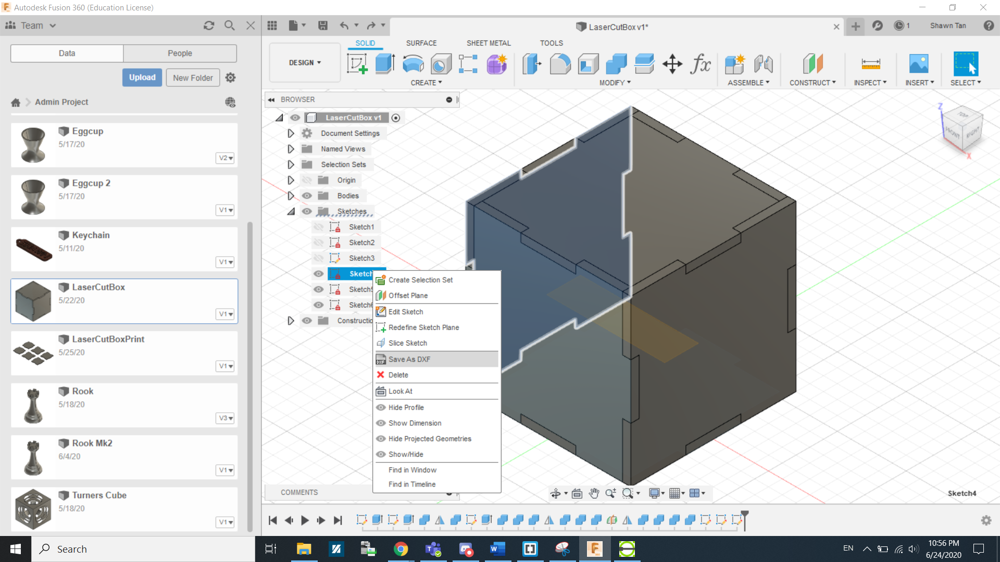We do this again 2 more times. Since the box we are making is symetical on all sides, we just need a sketch of the 3 sides(Front, Right and Bottom.) or vice versa. After that it is as simple as right clicking the sketches and saving them as DXF files.
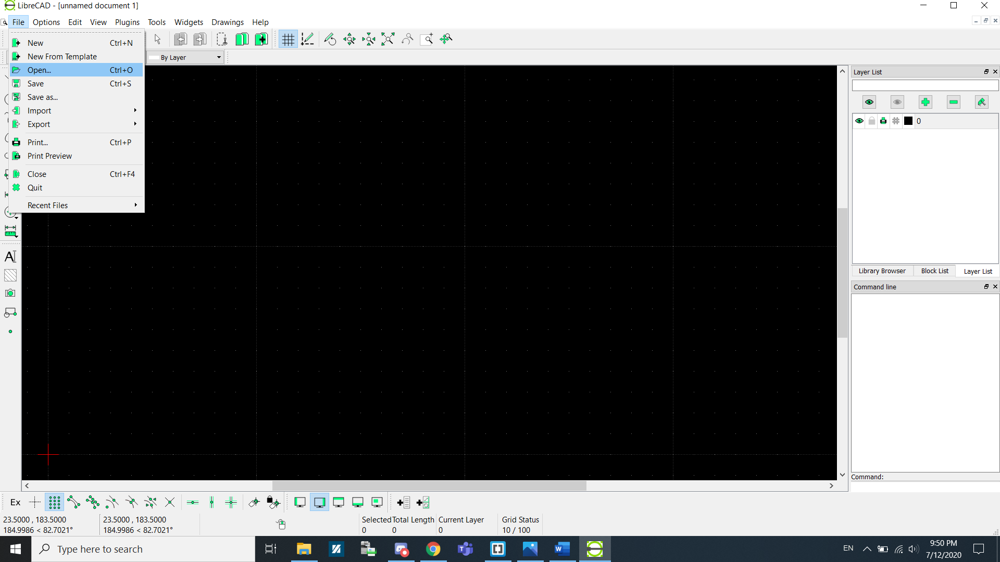Now we will use LibreCAD to combine and align the DXF for LaserCutting. Under Files, click Open.
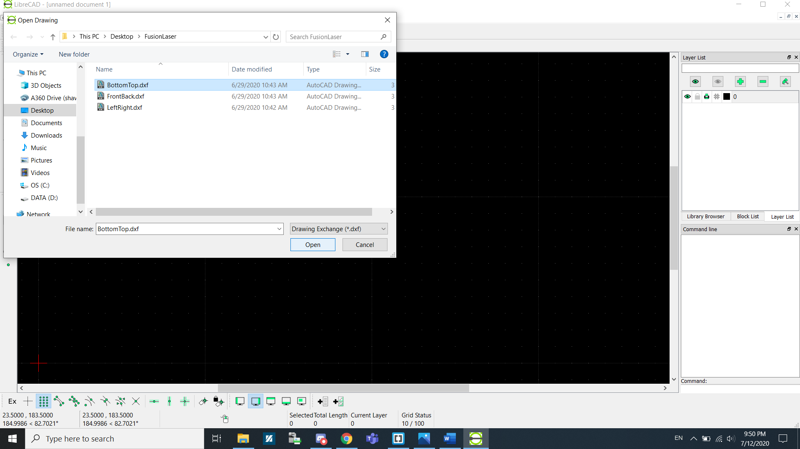Select the DXF files that you want to print out.
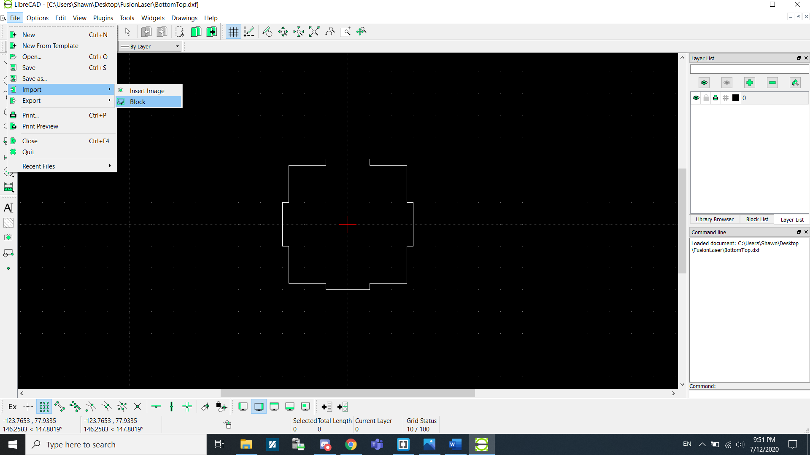Now go to Import > Block to add the remaining shapes.
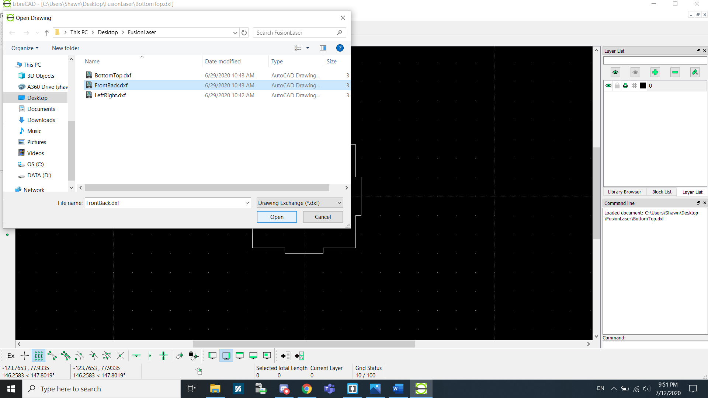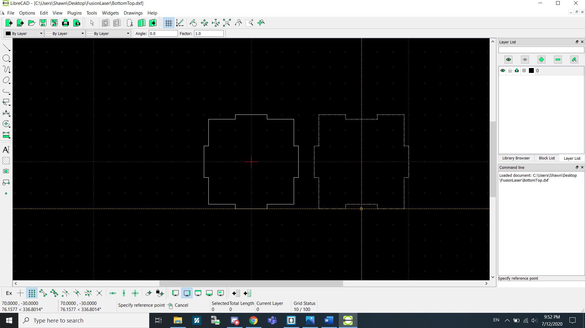
Select the next shape and add it into the canvas. Repeat this process until...
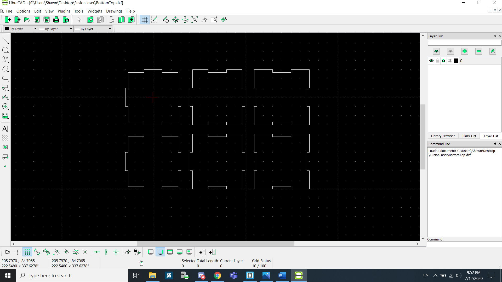...you get this.
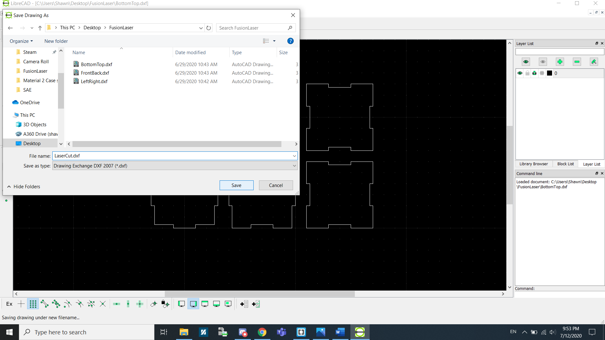Now save the file as a DXF file.
Now that you have saved your components as a DXF file, you can now do an import of that DXF file into CorelDraw. Create a new CorelDraw file using the default template.
Go to File > Import > Select LibreCAD DXF file. MAke sure that Scaling is at 1:1 and units are in Metric. Because we are doing a Vector cut, we will be using Hairline as the lines we are going to cut. Click Configure if you want to tinker with the Settings for Power, Speed, Frequency for Vector and Raster.
On the Laser cutter there are a few functions needed for operations.
- Config: This sends the cutter head to the Top-Left corner of the cutting plane. We would usually add a 5mm offset to the top and the left as if we do not, the laser cutter would actually cut into the machine.
- Jog: This is used to move the cutter head to a specific position on the board to start cutting. We can turn on the laser to precisely show where the operation will start to make alignment easier.
- Job: This is to select the file/job needed for cutting. Select the latest file(The file that you just sent for printing).